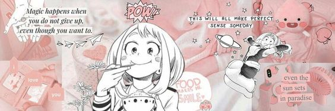

Hola, bienvenidos a un mundo diferente lleno de alegrias y llanto.
La cultura asiatica está despertando un creciente interés en nuestro país, y la comida es sólo un ejemplo.
Ese interés es especialmente intenso entre los jóvenes.
Y va más allá de los meramente consumidores de manga y anime, o los aficionados a cosplay. Todo lo que se necesita saber de estas culturas, famosos y mas, lo tenemos aqui.
Ost k-dramas
kpop

@mikuu_ana